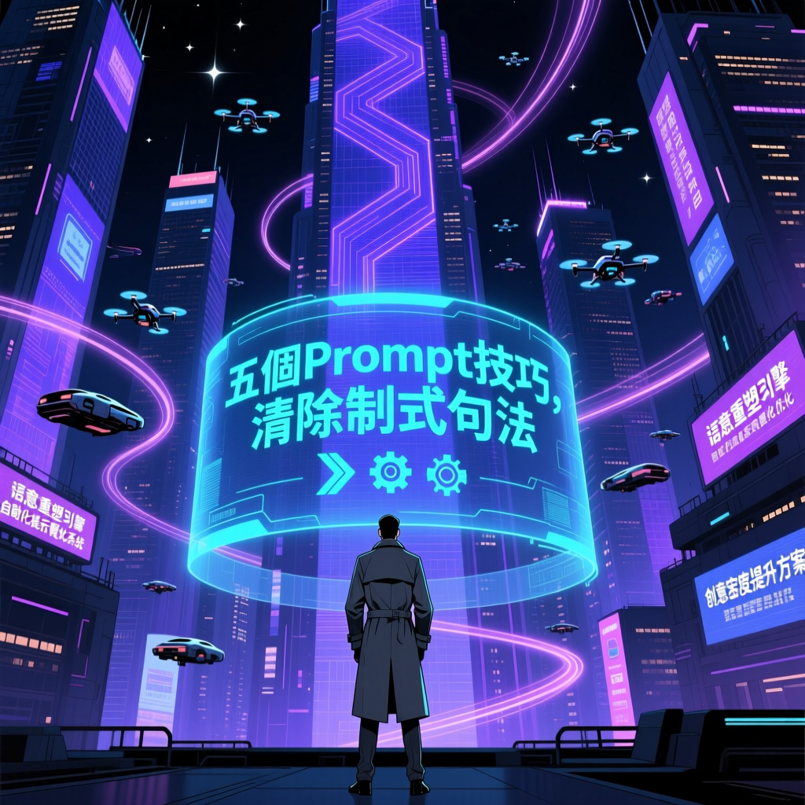

生成式 AI 走入大眾視野兩年，「AI 味」成為新困擾。本文深入解析 AI 語言指紋的技術根源，並提供五個實戰 Prompt 技巧，讓你的 AI 內容重獲人類靈魂。

生成式 AI 走入大眾視野兩年，我們對它的新鮮感已逐漸被視覺疲勞取代。無論是看一篇分析報導或是一段社群貼文，讀者能察覺出那些隱藏在字裡行間的「AI 味」：過度禮貌的開場、機械化的條列以及制式化句法。
數位鑑識領域有種分析技術「語言指紋」（Linguistic Fingerprints），指在書寫或口語表達展現出獨特、有個人辨識度的語言習慣和特徵。AI 語言指紋非常鮮明，它們熱愛使用「總結來說」、「首先、其次、最後」這類標準轉折詞，習慣在段落結尾下溫馨但空洞的建議。
「許多人抱怨 AI 寫出來的東西『看似很有深度，實則全是廢話』。」
— TECHNEWS 專題分析這背後有兩個技術原因，一是RLHF 的過度修正，一是注意力機制的副作用。
為使 AI 更像人類，工程師透過「從人類回饋強化學習」（RLHF）微調模型。但人類評價者多傾向給予「完整、有禮貌、解釋詳盡」的回答高分，導致 AI 學會用冗長的贅詞包裹簡單的答案，換取高滿意度。
Transformer 架構的注意力機制（Attention Mechanism）讓模型擅長建立邏輯連結，過度承上啟下，為確保語意連貫，會加入大量過渡句。
寫作本質在差異化與觀點，當 AI 抹平所有稜角，也同時抹殺了讀者的閱讀動機。
這就像是職場怕出錯的下屬，報告寫得洋洋灑灑，卻遲遲不敢下定論。AI 的廢話，是在「理解不夠深」與「怕說錯話」間的權衡產物。
要解決廢話問題，關鍵不在於讓它寫多，在於給它「限制」。
對於使用 GPT-4o-mini 或 Gemini 等免費版模型的用戶，可用以下精確的 Prompt 技巧打破它的「罐頭慣性」：
明確列出「禁語清單」。如：「撰寫時請禁止使用：『總結來說』、『首先／其次／最後』、『不僅如此』、『這是一個……的過程』。直接進入重點，不要有過度禮貌的開場。」
否定式指令能迫使 AI 繞開機率最高的字詞路徑，尋找較具創意或更直接的表達方式。
要求 AI 模擬人類的寫作節奏，人類寫作會有長短句交錯，而 AI 傾向每句長度相仿。例：「請調整句式結構，使用 50% 短句（10 字以內）與 50% 長句交錯，避免節奏過於平穩」
這指令打破 AI 等長步調，產出類似人類思考時的停頓感，提升閱讀的流暢度。
這能強制 AI 脫離平庸。如：「請從反直覺角度分析這個問題，不要提供大眾皆知的常識性建議，需引用非典型的案例。」
要求 AI「不准說大家都知道的事」時，它會被迫檢索訓練數據權重較低但更具洞見的資訊，較符合專業寫作所需的深度。
與其叫它扮演「專家」，不如賦予它「文風」。如：「請模仿《連線》（Wired）雜誌的冷峻、充滿科技感且略帶諷刺的口吻撰寫，避免使用激勵性質的語言。」
特定媒體或作者風格擁有獨特的語彙庫，能壓過 AI 原本的罐頭語彙庫。
禁止 AI 使用抽象的形容詞，因為「機器感」常來自形容詞堆砌。如：「描述這項技術的好處時，禁止使用『效率極高』、『革命性』或『非常便利』。請改用具體工作情境展示效果。」
強制 AI 寫出「畫面感」非「結論」，文字才會產生靈魂。
| 特徵 | AI 寫作 | 人類寫作 |
|---|---|---|
| 開場方式 | 過度禮貌、冗長鋪墊 | 直接切入主題 |
| 轉折詞 | 「總結來說」、「首先/其次/最後」 | 多變、自然的過渡 |
| 句式節奏 | 每句長度相仿、平穩 | 長短句交錯、有停頓感 |
| 結論風格 | 溫馨但空洞的建議 | 明確觀點、敢於下定論 |
| 形容詞使用 | 堆砌抽象形容詞 | 具體情境描述 |
| 觀點深度 | 常識性、平庸建議 | 獨特見解、非共識視角 |
內容產生後微調，專業人士的價值是如何以高階 Prompt 篩選出有價值的觀點，再進行最後 20% 精準微調：
掌握 Prompt 技巧及 20% 微調，能在演算法時代，讓文字守住表達主體性及深度。
生成式 AI 的「機器感」源於 RLHF 過度修正與注意力機制副作用。通過五個 Prompt 技巧——否定式約束、調整寫作節奏、引入非共識視角、影子角色、場景化敘事——可以有效清除制式句法。專業人士的價值在於最後 20% 的精準微調，讓文字在演算法時代守住表達主體性及深度。